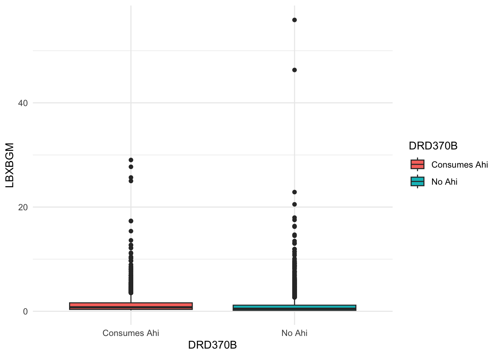

── Attaching core tidyverse packages ──────────────────────── tidyverse 2.0.0 ──
✔ dplyr 1.1.4 ✔ readr 2.1.5
✔ forcats 1.0.0 ✔ stringr 1.5.1
✔ ggplot2 3.5.1 ✔ tibble 3.2.1
✔ lubridate 1.9.4 ✔ tidyr 1.3.1
✔ purrr 1.0.4
── Conflicts ────────────────────────────────────────── tidyverse_conflicts() ──
✖ dplyr::filter() masks stats::filter()
✖ dplyr::lag() masks stats::lag()
ℹ Use the conflicted package (<http://conflicted.r-lib.org/>) to force all conflicts to become errors
library(bayesrules)library(BayesFactor)
Loading required package: coda
Loading required package: Matrix
Attaching package: 'Matrix'
The following objects are masked from 'package:tidyr':
expand, pack, unpack
************
Welcome to BayesFactor 0.9.12-4.7. If you have questions, please contact Richard Morey (richarddmorey@gmail.com).
Type BFManual() to open the manual.
************
library(haven)library(here)
here() starts at /Users/connorflynn/Documents/NSF-ALL-SPICE-Alliance/DS400
library(brms)
Loading required package: Rcpp
Loading 'brms' package (version 2.22.0). Useful instructions
can be found by typing help('brms'). A more detailed introduction
to the package is available through vignette('brms_overview').
Attaching package: 'brms'
The following object is masked from 'package:stats':
ar
library(janitor)
Attaching package: 'janitor'
The following objects are masked from 'package:stats':
chisq.test, fisher.test
# Assuming your dataframe is named `nhanes_data`df <- df %>%# Filter out rows where DRD370B is NAfilter(!is.na(DRD370B)) %>%# Recode 1 to "Yes" and 2 to "No" for DIQ010 and DRD360mutate(DRD370B =ifelse(DRD370B ==1, "Consumes Ahi", "No Ahi") )
df <- df %>%filter(!is.na(LBXBGM))
methods
tabyl(df$RIAGENDR)
df$RIAGENDR n percent
1 1936 0.481592
2 2084 0.518408
mean(df$RIDAGEYR)
[1] 43.45423
sd(df$RIDAGEYR)
[1] 23.52047
tabyl(df$DRD370B)
df$DRD370B n percent
Consumes Ahi 1467 0.3649254
No Ahi 2553 0.6350746
summary(df$LBXBGM)
Min. 1st Qu. Median Mean 3rd Qu. Max.
0.180 0.180 0.580 1.264 1.330 55.900
Analysis
Standard boxplot
ggplot(data = df, aes(x = DRD370B, y = LBXBGM, fill = DRD370B)) +geom_boxplot() +#geom_jitter(size = 0.001) +#ylim(0,5)+theme_minimal()

Log Violin plot w/ boxplots
why log?
Using log-transformed blood mercury levels makes the analysis more statistically robust, helps meet model assumptions, and allows us to interpret results in terms of relative differences rather than absolute changes, which is often more meaningful in environmental health studies.
Right-Skewed Distribution:
Blood mercury levels are typically highly right-skewed, meaning most people have low levels, while a few individuals have very high concentrations. Log transformation reduces skewness, making the data more approximately normal, which is often desirable for modeling.
ggplot(df, aes(x = DRD370B, y = LBXBGM, fill = DRD370B)) +geom_violin(alpha =0.7, trim =FALSE) +# Preserve full distributiongeom_boxplot(width =0.1, color ="black", alpha =0.7, outlier.shape =NA) +# Overlay boxplotstat_summary(fun = median, geom ="point", size =3, color ="black") +# Add medianscale_y_log10() +# Log transformation for better scalingscale_fill_manual(values =c("cyan4", "darkorange")) +# Custom colorslabs(x ="Ahi Consumption",y ="Blood Mercury Levels (µg/L log)",title ="Log Distribution of Blood Mercury Levels by Ahi Consumption" ) +theme_minimal(base_size =14) +# Clean themetheme(legend.position ="top") +geom_hline(yintercept =4.1, linetype ="dashed", color ="black", linewidth =1) +# Move legend to top geom_vline(xintercept = 4.1, linetype = "dashed", color = "black", linewidth = 1) +annotate("text", y =4.71, x =0.1, label ="HOMA-IR threshold (4.71 μg/L)", color ="red", angle =0, hjust =-2.4, size =2.8) +annotate("text", y =5.71, x =0.1, label ="5.25 % of participants", color ="black", angle =0, hjust =0, size =2.8) +annotate("text", y =5.71, x =0.1, label ="4.35 % of participants", color ="black", angle =0, hjust =-6, size =2.8)